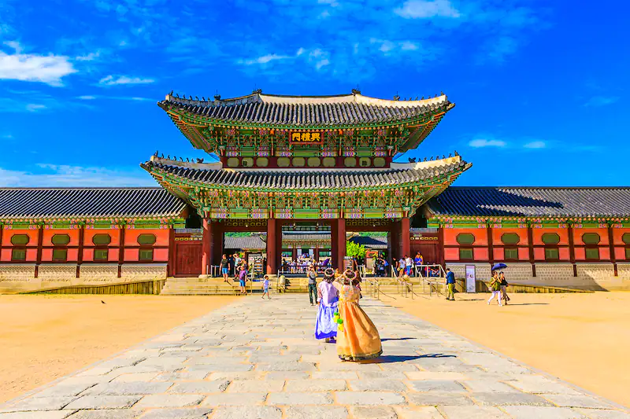

Why I want to visit South Korea. South Korea's culture has a unique and vibrant culture that is known for its music, art, fashion, and food. Visitors can experience this culture by attending K-pop concerts, visiting museums and art galleries, trying out Korean cuisine, and exploring traditional markets.South Korea's scenery and beauty is home to some stunning natural landscapes, including national parks, beaches, mountains, and forests. Some popular destinations for nature lovers include Jeju Island, Seoraksan National Park, and Nami Island. South Korea's technology and innovation is known for its advanced technology and innovation. Visitors can check out cutting-edge technology at places like the Samsung Innovation Museum or take a tour of the Seoul Digital Media City. South Korea's history has a rich history and a variety of ancient architecture to explore. Some must-see destinations include Gyeongbokgung Palace, the ancient city of Gyeongju, and the Jeonju Hanok Village. And lastly its shopping and nightlife, South Korea has a bustling nightlife scene with plenty of bars, clubs, and restaurants to choose from. The country is also known for its shopping, with a wide variety of trendy boutiques, department stores, and street markets.
Places I want to visit in South Korea! Where do you want to go first?
SEOUL
GYEONGBOKGUNG PALACE
Gyeongbokgung Palace is a must-visit destination for anyone interested in Korean history and culture. It was built in 1395 and served as the main royal palace during the Joseon dynasty. The palace complex is massive, and there are many interesting things to see and do there. Historical significance, Gyeongbokgung Palace is one of the most important historical sites in Korea. It is the largest and most impressive of the five grand palaces built during the Joseon dynasty.
Beautiful architecture, The palace is a stunning example of traditional Korean architecture, with its colorful painted wooden buildings, intricate carvings, and sweeping rooflines. You can watch the changing of the guard ceremony, try on traditional Korean clothing, and participate in other cultural activities.
Educational opportunities, You can learn about Korean history, art, and architecture by visiting the palace and its various museums and exhibitions. The palace is situated in a beautiful park, which makes it a pleasant place to stroll and enjoy the scenery. Overall, Gyeongbokgung Palace is a must-see destination for anyone interested in Korean history, culture, and architecture. It offers a unique and fascinating glimpse into Korea's past and is an excellent place to learn and explore.
BUKCHON HANOK VILLAGE
Bukchon Hanok Village is a popular tourist destination in Seoul, South Korea, and for good reason. This traditional Korean village offers a unique look at the country's history and culture, and there are many reasons why you should consider visiting it. The traditional Korean architecture, the village is home to hundreds of traditional Korean houses, or hanoks, many of which date back to the Joseon Dynasty (1392-1910). These houses feature intricate wooden designs and are a beautiful example of traditional Korean architecture.
Cultural experiences, You can participate in cultural activities such as making traditional Korean crafts, learning about Korean tea ceremonies, and trying on hanbok (traditional Korean clothing). Bukchon Hanok Village is located between two major Korean palaces, Gyeongbokgung and Changdeokgung, making it an important historical site. The village is situated on a hill, providing stunning views of the city and surrounding mountains. It's a great place to take photos and enjoy the scenery.
Unique shopping and dining, There are many small shops and restaurants in the village that offer unique products and traditional Korean food. Overall, Bukchon Hanok Village is an excellent place to learn about and experience Korean history and culture. It's a beautiful and unique destination that should be on every traveler's list when visiting Seoul.
BUSAN
HAEUNDAE BEACH

Haeundae Beach is one of the most popular beaches in South Korea, and there are many reasons why you should consider visiting it. Beautiful scenery, Haeundae Beach is known for its crystal-clear waters and stunning views of the surrounding mountains. It's a great place to relax and enjoy the natural beauty of the area. The beach is located in the heart of Haeundae, a vibrant neighborhood in Busan that is home to many hotels, restaurants, and shops. It's easy to get to and makes a great day trip or weekend getaway.
Wide range of activities, the beach offers a wide range of activities, including swimming, surfing, kayaking, and parasailing. There are also many beachside restaurants and cafes where you can enjoy a meal or a drink while taking in the view. Throughout the year, Haeundae Beach hosts many cultural events, including the Haeundae Sand Festival, which features elaborate sand sculptures created by artists from around the world.
The place is family-friendly. The beach is a popular destination for families, with many activities and amenities for children, including a playground and a water park. Overall, Haeundae Beach is an excellent destination for anyone looking to enjoy the beauty and culture of South Korea's coast. Whether you're looking for relaxation or adventure, there's something for everyone at Haeundae Beach.
HAEDONG YONGGUNGSA TEMPLE

Haedong Yonggungsa Temple is a popular destination for visitors to South Korea for several reasons. First of all its sceic location. The temple is situated on a cliff overlooking the sea, providing breathtaking views of the coastline and the ocean. Unlike most Korean temples, which are built in the mountains, Haedong Yonggungsa Temple was built by the sea. Its design features a mix of traditional Korean and Buddhist architectural styles.
The temple was founded in 1376 by the Buddhist teacher Naong during the Goryeo Dynasty. It has survived multiple invasions and wars and has been rebuilt several times throughout its history.
Religious significance, Haedong Yonggungsa Temple is one of the few temples in Korea dedicated to the Bodhisattva of Compassion, Kwan Yin. The temple also features a large statue of the Buddha and numerous other Buddhist relics and artifacts. Overall, visiting Haedong Yonggungsa Temple is a great way to experience the beauty and history of Korea's Buddhist culture and to enjoy stunning views of the ocean.